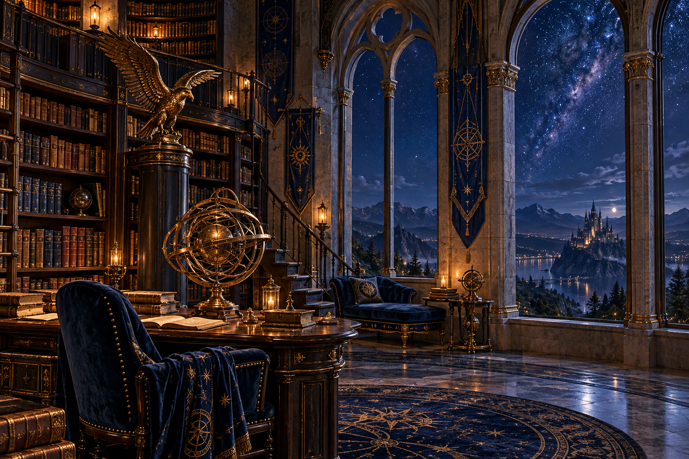
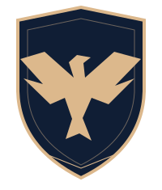

Luna Lovegood
Una mirada original y abierta a otras posibilidades.
Una pregunta abre otro mundo
La curiosidad es una brújula: descubre, imagina y encuentra conexiones que nadie había visto.


Rowena Ravenclaw fue una de las fundadoras de Hogwarts y dio origen a una casa que aprecia el aprendizaje y el pensamiento independiente. Su sala común está en una torre. Para entrar, sus estudiantes deben resolver un acertijo.
La asociación elemental es simbólica. Los emblemas de este sitio son interpretaciones gráficas.
Una casa reúne historias distintas. Sus valores se expresan de maneras diversas.
Una mirada original y abierta a otras posibilidades.
Estudiante de Ravenclaw y jugadora de quidditch.
Profesor de Encantamientos y jefe de la casa.
“Preguntar es el primer paso para descubrir.”FRASE ORIGINAL PARA ESTE EJEMPLO · NO ES UNA CITA DE LA SAGA
Regla 60-30-10 orientativa: base oscura dominante, superficies e imagen como apoyo, y acento para detalles, enlaces y símbolos.
Una familia local distingue a la casa. El texto de lectura mantiene la familia Archivo y una longitud cómoda de línea.
Contenido adaptado con fines educativos de HarryPotter.com. Frase original; escena generada y escudo reinterpretado.